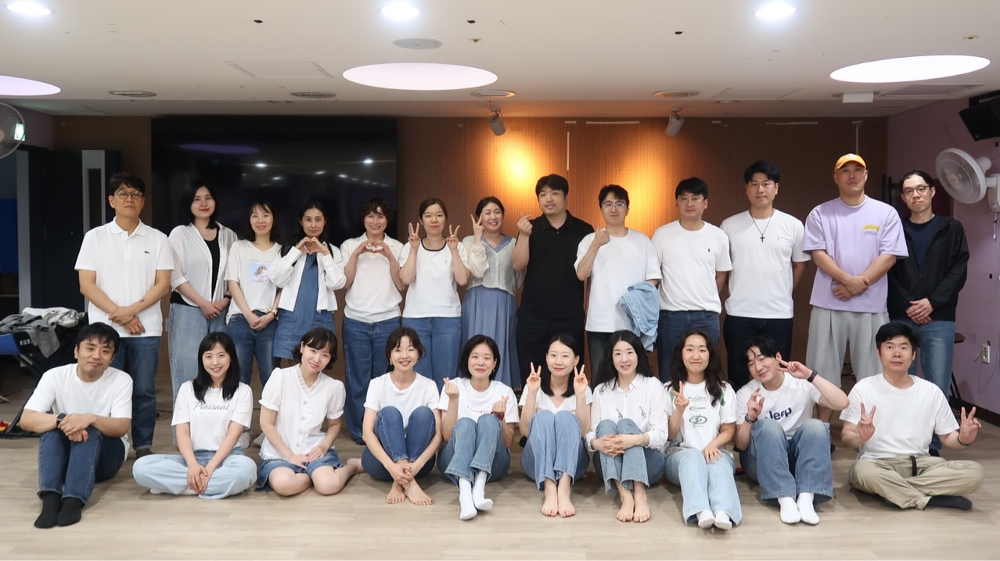

2026 Outreach

기도제목
통영 땅에 회개와 부흥의 역사가 임하기를
팀원들이 각자의 은사로 한 영혼을 살리는 사명 감당하기를
성령 안에서 팀원들이 한 팀으로 연합하기를
준비하는 모든 사역으로 구속사의 말씀이 전해지기를
팀원 각자가 소망하는 영역에서 하나님의 음성 듣기를
후원계좌
카카오뱅크 3333-261-292139
(예금주 이은주)
기간 2026.07.29 ~ 08.01
통영 물댄동산교회 위드공동체 · 2026 여름 아웃리치
일정
식단
팀 정보
기도